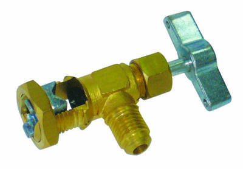
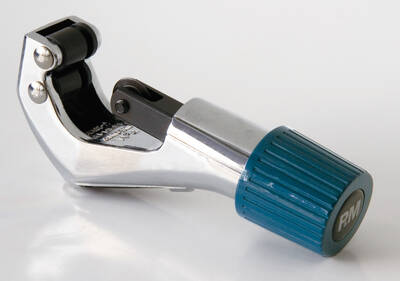
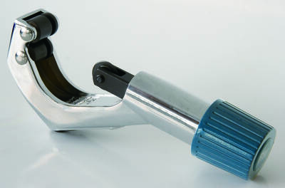
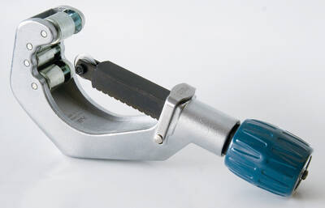
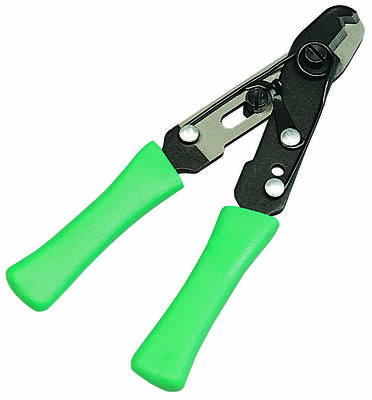
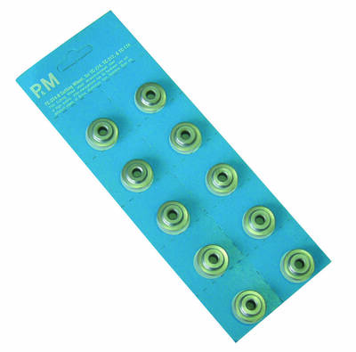

☎ 0216 344 48 19

341 HIRSIZ VANA 102636 BORU KIVIRMA P&M, soğutma & iklimlendirme valfler yedek parçası/ekipmanı. Model uyumu ve hızlı tedarik için ürün kodunu iletin; KlimaSun güvencesiyle temin edilir.
| Ürün Kodu | 341 HIRSIZ VANA 102636 BORU KIVIRMA P&M |
|---|---|
| Marka | P&M |
| Alt Kategori | Valfler |
| Özellik | P&M |
| Temin Durumu | Temin Edilebilir |
Sıfır ürünlerde üretici garantisi; revizyonlu / 2.el ünitelerde ürüne göre 6–12 ay Klimasun garantisi. Kapsam teklifte belirtilir.
Stoktaki ürünler aynı iş günü kargoya verilir; stokta olmayanlar Almanya ve İtalya'dan sipariş üzerine orijinal olarak temin edilir.
2004'ten beri endüstriyel iklimlendirmede Erdinç Klima güvencesi; F-Gaz / EKOMVET yetkinliği, kurumsal e-fatura ve teknik destek.
Bu model için yedek parça ve muadil seçenekleri için kodu bize iletin: P&M ürünleri · muadil ürünler · servis & bakım.
Evet. P&M 341 HIRSIZ VANA 102636 BORU KIVIRMA P&M arızalı ünitelerine bakım, kompresör değişimi, gaz şarjı ve revizyon dahil servis veriyoruz.
Stok durumuna göre sıfır, revizyonlu 2. el veya sipariş üzerine temin edilebilir. Teklif formundan sorabilirsiniz.
Uygun muadil / eşdeğer ürünler için kodu bize iletin; güncel Rittal ve MKS Clima muadilleri önerilir.






